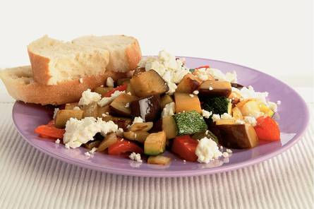

Lauwwarme ratatouillesalade

Ingrediënten:
- 2 uien
- 1 aubergine
- 2 courgettes
- 2 rode paprika's
- 6 eetlepels olijfolie met knoflookaroma en chilipepers
- 2 maal 125gr zachte geitenkaas
- 2 eetlepels balsamicoazijn
- 1 ciabatta (afbakbrood)
Bereiding:
Oven voorverwarmen op 250 °C. Uien, aubergine, courgettes en paprika's schoonmaken en in blokjes
snijden. Groenten mengen met 2 el olijfolie en op ingevette bakplaat leggen. Bakplaat in oven schuiven
en groenten in ca. 15 min. roosteren. Regelmatig omscheppen. Geitenkaas verkruimelen. Groenten uit oven
nemen en oven terugschakelen naar 225 °C. Groenten iets laten afkoelen en besprenkelen met azijn en rest
van olie. In hete oven brood bakken volgens gebruiksaanwijzing. Kaas over groenten verdelen. Salade
serveren met brood.